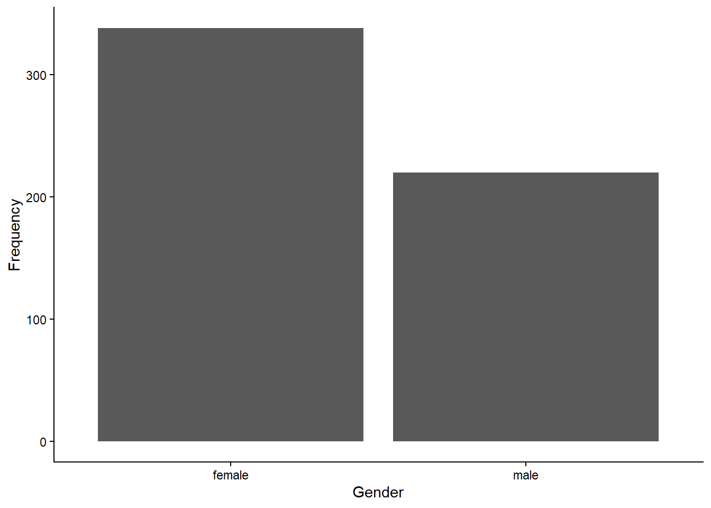
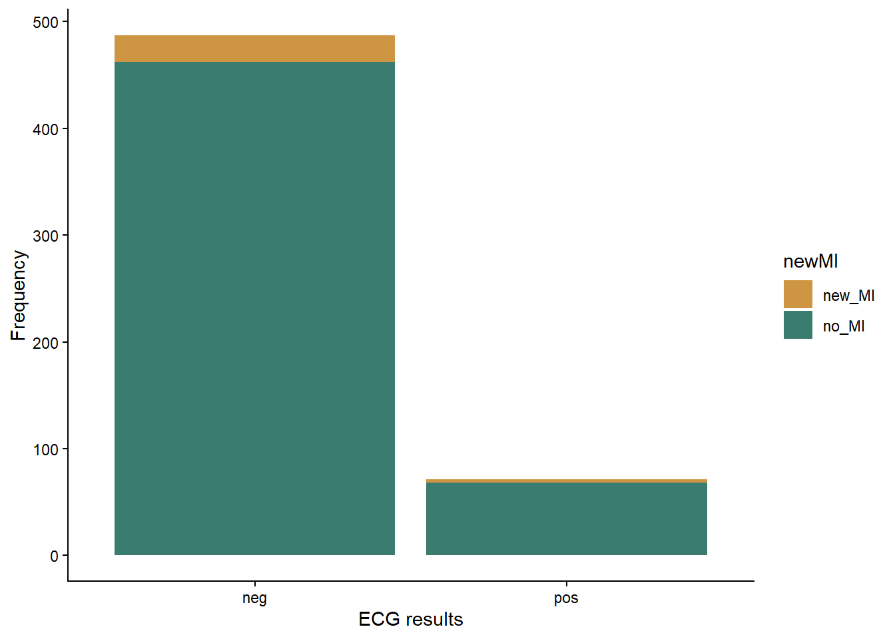

In all of our previous tests, we have worked with different versions of general linear models, in which our dependent variable have been continuous variable. In this lesson we will break away from the general linear model and work with categorial and count data.
For this lesson, we will be working with data collected by Dr. Alan Garfinkel, who was researching methods for predicting the risk of heart attacks in older patients. Younger patients are often tested for heart attack risk by first exercising and then having their heart stress measured with an ECG. However, older patients are often unable to tolerate the exercise required for the test. Dr. Garfinkel was testing whether a medication called dobutamine, which mildly stresses the heart, can be used as an alternative. He gave patients a heart stress test after they took dobutamine, and then he followed the patients for a year to see if they had a heart attack within that time frame. This allowed him to test whether a positive result on the dobutamine stress test was a good predictor of heart attack risk.
For our first test, we will run what is called a goodness of fit test. We can use this type of test to determine if the observed frequency of samples in different categories follow some expected frequency (the expected frequencies are the null hypothesis). In this example, we will work with the cardiac data and test whether male and female patients were equally represented in the study. In other words, was there a 50:50 ratio of male and female patients.
First, load the data set. Be sure your working directory is set to the location of the cardiac data file.
cardiac <- read.csv("cardiac.csv")Now, make a simple bar graph showing the frequency of male and female patients in the sample.
library(ggplot2)
ggplot(cardiac, aes(x=gender)) +
geom_bar() +
labs(x="Gender", y="Frequency") +
theme_classic()
Before we can run our Chi-square test to determine if males and
females were equally represented, we have to summarize our data. The
Chi-square test function in R requires a simple table with the count of
samples in each category (the number of male and female patients, in
this example). We can create this table easily in R using the
table function. The argument for this function is the
variable we want to summarize, in this case, the “gender” variable from
our cardiac data frame. Sometimes it can also be helpful to see the
proportions instead of the counts. We can convert our table into
proportions using the prop.table function.
gender_table <- table(cardiac$gender)
gender_prop <- prop.table(gender_table)Now that we have our table with the counts of the two genders, we are
ready to run our test. We will use the chisq.test function.
The first arguments is the table with the counts, that we just created.
The second argument is a vector with the expected proportion for each
category. Because we are testing whether the genders are
equally-represented, our expected frequencies (i.e., our null
hypothesis) are 0.5 and 0.5.
gender_test <- chisq.test(gender_table, p=c(0.5,0.5))
gender_test##
## Chi-squared test for given probabilities
##
## data: gender_table
## X-squared = 24.953, df = 1, p-value = 5.873e-07Based on the output, were male and female patients equally represented in the study?
If they are not equally represented, it is also important to determine which category is over-represented and which is under-represented. It is pretty easy in this case because we only have two categories, and we were testing if they had equal proportions. In other cases, the math might not be quite as simple, but we can get R to help us out. We can look at some additional output from the test to see the observed and expected values for each category as follows.
gender_test$observed##
## female male
## 338 220gender_test$expected## female male
## 279 279Which gender was over-represented, and which gender was under-represented?
For the next test, we will work with a different type of question. Instead of just comparing the frequency in different categories of one variable, we will work with two sets of categories and test whether the frequencies of one categorical variable are affected by the other categorical variable. In this case, we will use the same cardiac data set to test whether patients who tested positive for heart stress on an ECG after receiving dobutamine were more likely to have a myocardial infarction (heart attack) within the next year than patients who tested negative for heart stress.
We’ll again begin by making a bar graph. This time, because we are looking at the frequencies in two different categories, we will make a stacked bar graph. We will use the ECG results as our x variable, and each bar the ECG result categories with have two colors, showing the proportion of patients in each of those categories that did or did not have a heart attack.
ggplot(cardiac, aes(x=posECG,fill=newMI)) +
geom_bar() +
labs(x="ECG results", y="Frequency") +
scale_fill_manual(values=c("#ce9642","#3b7c70")) +
theme_classic()
Just like with the goodness of fit test, to run a Chi-square test on a contingency table, we have to convert our data to a table showing the frequency of individuals in each of the categories. In this case, our table will have two columns (positive and negative ECG tests) and two rows(heart attack or no heart attack). We will once again make two table: one showing the counts and the other showing the proportions in each category.
myo_table <- table(cardiac$newMI,cardiac$posECG)
myo_prop <- prop.table(myo_table)Now that we have our table with the counts, we can run our Chi-square test to see if patients who tested positive for heart stress were more likely to have a heart attack within the next year than patients who tested negative for heart stress. This time, we do not have to provide the expected frequencies because we are testing whether the frequency of heart attacks differs between the two test results, NOT if the frequency matches some specific expected frequency.
myo_test <- chisq.test(myo_table)## Warning in chisq.test(myo_table): Chi-squared approximation may be incorrectmyo_test##
## Pearson's Chi-squared test with Yates' continuity correction
##
## data: myo_table
## X-squared = 0.0013321, df = 1, p-value = 0.9709Notice when you run this test, you get a warning saying that the “Chi-square approximation may be incorrect”. This is because you have a low sample size in one of your groups, so your count data might not be roughly normal. We can deal with this easily by adding an argument to our test. This argument will tell R to use simulations to estimate the p-value, which can be a better approach when you have low expected values for some groups.
myo_test <- chisq.test(myo_table, simulate.p.value = TRUE)
myo_test##
## Pearson's Chi-squared test with simulated p-value (based on 2000
## replicates)
##
## data: myo_table
## X-squared = 0.10722, df = NA, p-value = 0.7916Based on the test result, what do you conclude about whether the dobutamine stress test was a good predictor of heart attack risk?
To help interpret the data (e.g., see which observed values might be higher or lower than expected), we can again look at the observed and expected frequencies in each category.
myo_test$observed##
## neg pos
## new_MI 25 3
## no_MI 462 68myo_test$expected##
## neg pos
## new_MI 24.43728 3.562724
## no_MI 462.56272 67.437276In this case, as expected from our p-value, the observed and expected frequencies match very closely.